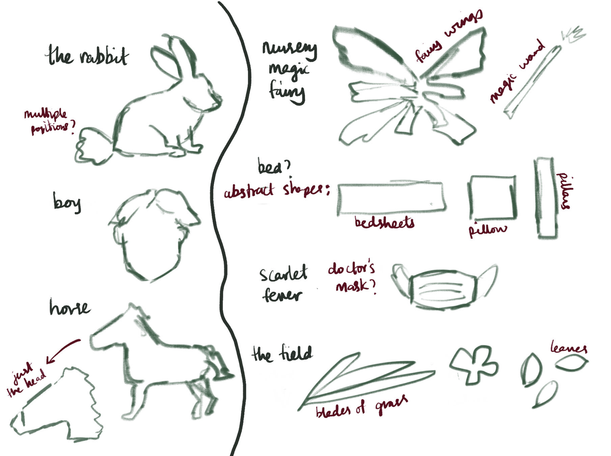
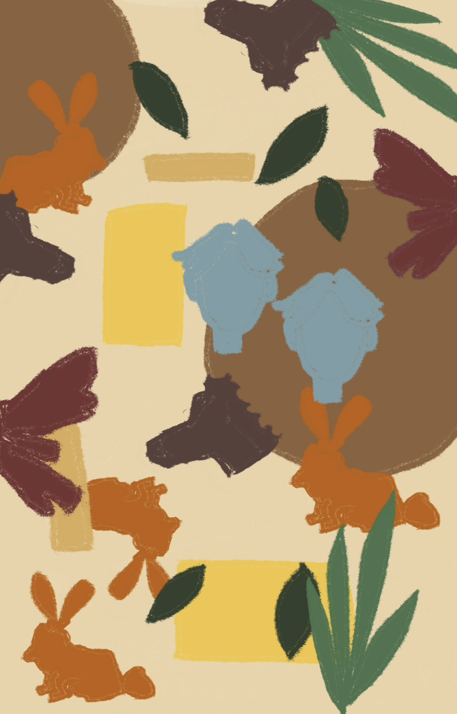

Archive
Textured Rendition of 'The Velveteen Rabbit'

An interactive rendition of my favorite children’s story, ‘The Velveteen Rabbit’. Using fabrics and embroidery it features multiple interactive elements to provide an engaging tactile experience, f.e. the boy’s face is a pocket and the green leaves are flaps. Each separate piece of fabric relates to subjects from the story, such as by shape, color, texture, size, etc.; giving an audience the opportunity to read the story visually, experiencing it through the senses of seeing and touching.
Process

